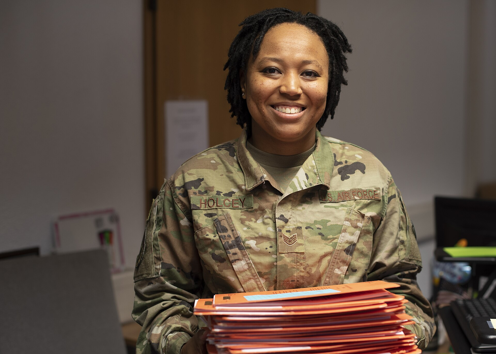

Chapter 14
The Pivotal Relocation
The shore party stood on the narrow shingle of Cape Valentine and watched the James Caird disappear into the swell. Within hours of that departure on 15 April 1916, the twenty-two remaining men understood what their earlier exhilaration at finding land had concealed. Cape Valentine could not sustain them.
Thomas Orde-Lees, the expedition’s storekeeper, noted in his diary that the beach offered no adequate supply of freshwater. The cliffs above them held glaciers, but reaching those ice fields required a climb that exhausted men could not attempt repeatedly. Worse, the narrowness of the beach meant that any heavy sea might sweep their remaining two boats—the Dudley Docker and the Stancomb Wills—back into the ocean. The wind had shifted in the hours after the Caird’s departure, now blowing directly onto the shore, driving spray across their makeshift camp and soaking the sleeping bags they had hauled from the boats. The position was 61° 06′S, 54° 52′W.
Frank Wild, the man Shackleton had left in command, made his decision quickly. He had been Shackleton’s second-in-command since the Nimrod expedition eight years earlier. Staying at Cape Valentine meant slow attrition. Moving meant risk, but risk with a purpose. Wild ordered the men to prepare the boats for immediate departure. They would row westward along the coast, seeking a site that offered protection from the wind and access to freshwater.
The boats launched at midday on 16 April. The Stancomb Wills, the smallest, took the lead, with Wild himself aboard. The Dudley Docker followed. The sea remained comparatively calm, but the swell rolled in from the west, and the men at the oars found themselves fighting the same motion they had endured for the previous week. The cliffs above them rose sheer from the water, offering no landing and no respite. Ice floes drifted past, remnants of the pack they had escaped.
After three hours of rowing, the boats rounded a low point of land and entered a small bay. The shelter was immediate. The cliffs here formed a natural amphitheatre, and the beach lay protected from the prevailing winds. A glacier tongue descended nearly to the water’s edge, offering freshwater ice for the taking. Penguins crowded the rocks in numbers the men had not seen at Cape Valentine. Wild brought the Stancomb Wills ashore, walked the perimeter of the available ground, testing the stability of the stones, examining the angle of the cliffs. He returned to the boat and gave the order. They would camp here.
The men named it Point Wild. It was not a name chosen in optimism or sentiment. It was a designation, a marker on a map that existed only in their minds. The point offered nothing more than marginally better conditions than the cape they had left. But the glacier provided freshwater. The penguin rookeries provided food. The amphitheatre of rock provided shelter from the worst of the wind. It was enough.
The first night established the pattern that would govern their lives for the months ahead. The men unloaded the boats and stacked their stores on the beach, covering them with canvas to protect them from the snow that began falling in the early hours. They had tents—six in total, salvaged from the Endurance—but the tents were designed for polar travel, not for sustained habitation on a narrow beach beneath an Antarctic cliff. Wild understood that survival required more than shelter and food. It required order.
The men had been a crew, a ship’s company, a social organism held together by discipline and routine. The Endurance had provided the structure of their days: watches, meals, duties, the predictable rhythm of life at sea. The ice had enforced its own discipline: the care of the dogs, the maintenance of the boats, the endless waiting. Now they had neither ship nor ice. They had a beach and two boats and twenty-two men facing an indefinite wait for rescue that might never come. Wild’s first act as commander was to establish a roster. Every man would have a duty. The routine would be their ship now.
The construction of permanent shelter began the following morning. The two boats could not remain on the open beach. The first heavy sea would swamp them or carry them away. The solution emerged from the resources at hand. The Stancomb Wills, the smaller of the two boats, would become the roof. The men would invert her, prop her up on walls of stone and packed snow, and live beneath her hull.
The work began on 17 April. The men divided into crews, each assigned a specific task. One team gathered stones from the beach and the base of the cliffs, carrying them in sacks improvised from canvas and clothing. Another team quarried ice from the glacier tongue, hauling blocks back to the building site on makeshift sleds. A third team prepared the boat itself, removing her masts and spars, clearing her interior, readying her for inversion.
The labor was backbreaking. The men had been rowing for seven days, had spent ten months on the ice, had survived the loss of their ship. Their bodies were weakened, their hands blistered, their strength diminished. But the alternative to work was death, and they worked.
The expedition’s geologist took charge of the stone walls. He had surveyed the beach on the first day and identified a natural depression in the shingle, a slight hollow that would reduce the height of the walls required. Under his direction, the men built two parallel walls, each about twenty feet long, spaced to support the inverted hull of the boat. The walls rose in courses of stone, each layer set slightly inward to create a stable angle. The gaps between stones were packed with snow and ice, which froze into a solid mortar in the subzero temperatures.
Alexander Macklin, the expedition’s doctor, documented the construction in his diary. He noted the dimensions of the walls, the weight of the stones, the hours of labor required for each course. He recorded the temperature, the wind direction, the state of the sea. His entries were clinical, precise, the observations of a man trained to note symptoms and track progress. But between the lines of his diary, another story emerged. The men were exhausted. Their hands were cut and bruised, their muscles strained, their energy depleted. They worked because Wild ordered them to work, and they obeyed Wild because they had obeyed Shackleton, and the chain of command was the last intact thing they possessed.
The inversion of the Stancomb Wills took place on 19 April. The men gathered around the boat, positioned at the edge of the walls. Ropes had been attached to her gunwales, and the crew took their stations. At Wild’s signal, they lifted. The boat rose, tilted, caught the wind. For a moment she balanced on her beam ends, suspended above the walls. Then she dropped into place, her hull forming a roof, her keel pointing at the sky. The men scrambled to secure her, packing snow and ice into the gaps between her gunwales and the stone walls. The structure was complete. They had built themselves a house.
The interior was cramped and dark. The Stancomb Wills was only twenty-one feet long and six feet wide, and the walls reduced the usable space further. The men would sleep side by side, head to toe, their bodies pressed together for warmth. The floor was packed snow, levelled and smoothed but still frozen beneath them. A canvas screen divided the interior into two sections, one for the officers and one for the men, a retention of naval hierarchy that Wild maintained deliberately. The structure was not comfortable. It was not even adequate. But it was shelter.
The Dudley Docker remained on the beach, hauled above the high-water mark and lashed to stakes driven into the shingle. She would serve as a storehouse and a fallback position if the hut became uninhabitable. The men unloaded their remaining supplies: cases of stores, bags of coal, tins of fuel, rolls of canvas. Everything was inventoried and stacked. Orde-Lees, as storekeeper, maintained the ledger. He recorded every item, every ration, every ounce of food and fuel. The numbers were not encouraging. They had supplies for perhaps three months if they rationed strictly. After that, they would depend on what they could hunt.
Hunting became the primary occupation. The penguin rookeries at Point Wild were the largest the men had seen since landing on Elephant Island. Gentoo and chinstrap penguins crowded the rocks, and the men took them whenever they could. The hunting parties set out each morning, climbing the slopes above the camp to reach the rookeries on the cliffs. The work was dangerous. The rocks were slick with ice and guano, and the slopes were steep. But the penguins provided meat and fat and oil, and the men needed all three.
Frank Hurley, the expedition’s photographer, documented the hunt in his diary. He described the penguins as stupid and trusting, easily caught and easily killed. He noted the quantities taken each day, the methods of preparation, the taste of the meat. His entries were matter-of-fact, the observations of a man who had seen too much to romanticize his subject. The penguins were food. The men were hungry.
The routine at Point Wild calcified within the first week. Wild issued a daily schedule: breakfast at 8: 00, work details from 9: 00 to 12: 00, lunch at 12: 30, work details from 1: 30 to 5: 00, dinner at 6: 00, lights out at 10: 00. The work details rotated: hunting parties, maintenance crews, watch-keepers. Every man had a role. Every role had a purpose. The routine was not arbitrary. It was the structure that held the party together, the framework that prevented the men from sinking into the lassitude that Wild knew was the first step toward death.
The watch-keeping was the most critical duty. The sea at Point Wild was unpredictable. A shift in the wind could bring heavy surf into the bay, threatening the boats and the stores on the beach. A watch-keeper was posted at all hours, his duty to monitor the water and sound the alarm if the surf rose. The watches were two hours long, taken in rotation through the day and night. The men hated the duty. It meant standing alone in the cold, staring at the black water, listening to the wind and the surf and the cries of the penguins. But it was necessary, and they did it.
The social order at Point Wild reproduced the order of the Endurance. Wild commanded. The officers formed a council, meeting each evening to discuss the day’s events and plan the next day’s activities. The men obeyed. The hierarchy was not questioned. It was the last remnant of the world they had lost, the final fragment of the expedition’s structure, and they clung to it as they clung to the beach itself.
But the hierarchy required maintenance. Wild understood that his authority depended on his ability to provide for the men, to make decisions that seemed wise, to maintain the appearance of competence even when he had no idea what the next day would bring. He kept the council meetings short and focused. He issued orders clearly and expected them to be followed. He made a point of sharing the hardships: taking his turn at the watch, eating the same rations as the men, sleeping in the same cramped quarters. The men noticed. They wrote about it in their diaries. They respected Wild because Wild respected them.

The cold was the constant enemy. The temperature dropped below freezing each night and rarely rose above it during the day. The men slept in their clothes, wrapped in their sleeping bags, huddled together for warmth. The hut offered protection from the wind, but it did not hold heat. The stone walls were frozen, the snow floor was frozen, the inverted hull of the boat was a thin barrier against the air outside. The men heated the interior with a stove burning penguin fat, but the stove was small and the fuel was limited. They lived in a state of constant, low-grade hypothermia, their bodies never quite warm, their fingers and toes always on the edge of frostbite.
Macklin, as doctor, monitored the men’s health. He checked their feet daily for signs of frostbite, treated their cuts and bruises, dosed them with the limited medicines in his kit. His diary recorded the progression of symptoms: the swelling of fingers, the discolouration of toes, the persistent cough that spread through the hut. He noted the psychological effects as well. The men were quiet, withdrawn, their conversation limited to the immediate tasks of the day. They stared at the walls of the hut and thought about the James Caird.
The James Caird was the subject of every conversation. Wild had calculated the distance to South Georgia: eight hundred miles across the open ocean, through some of the most dangerous waters in the world. The Caird was a twenty-two-foot boat, designed for harbour work, not for open-sea navigation. She had been strengthened by the ship’s carpenter, Harry McNish, but she was still a small craft in a large ocean. Shackleton had taken Worsley, the navigator, and Crean, the seaman, along with McNish, McCarthy, and Vincent. They had been gone for two days now. In two days, they had covered perhaps a hundred miles, if the wind had been favourable. They had seven hundred miles to go.
Orde-Lees, whose diary would become the most detailed record of the Point Wild months, wrote about the Caird constantly. He calculated her position, estimated her progress, speculated about her fate. His entries were a mixture of hope and despair, the thoughts of a man who understood the mathematics of survival and could not make them come out right. They could only wait. The outcome depended on forces beyond their control.
The men had placed their faith in Shackleton and in the boats. They had watched him depart with a mixture of relief and terror—relief because someone was going for help, terror because that someone was the only man who had kept them alive through the ice and the boats and the landing. Now they waited. They built their hut, they hunted their penguins, they kept their watches, they maintained their routine. They waited for the James Caird to reach South Georgia, for Shackleton to find a ship, for rescue to arrive.
Wild’s leadership during these first days established the pattern that would carry the party through the months ahead. He was not Shackleton. He did not have Shackleton’s presence, his ability to inspire, his talent for making men believe that everything would be all right. But he had something else: a steady competence, a quiet authority, a refusal to panic or to permit panic in others. He maintained the routine because the routine was all they had. He enforced discipline because discipline was the difference between a party and a mob.
The hut at Point Wild was not a home. It was a refuge, a temporary shelter, a place to wait. But in the absence of any alternative, it became the center of their world. The men woke there, ate there, slept there, spent their off-duty hours there. They sang songs, when someone could summon the energy to sing. They played cards, with a deck that someone had salvaged from the Endurance. They read the few books they had saved, reading and rereading until they knew the words by heart. They lived in the hut as they had lived on the ice, in the boats, in the ship before that: by enduring.
The endurance that had defined the expedition since the Endurance became trapped in the ice now became the sole objective of their existence. They were no longer explorers, no longer scientists, no longer sailors. They were survivors. Their goal was not discovery but persistence. Each day that they woke, each day that they ate their rations, each day that they maintained their routine, was a victory. The victory was invisible. It produced no results, achieved no progress, advanced no cause. But it was the only victory available to them, and they seized it.
The stone walls of the hut rose three feet from the ground, supporting the inverted hull of the Stancomb Wills. The structure was crude, asymmetrical, the work of exhausted men with inadequate tools. But it stood. It withstood the winds that swept across the bay, the snow that fell in heavy drifts, the cold that penetrated every layer of clothing. It housed twenty-two men through the Antarctic winter, through the months of darkness, through the endless wait. It was, in the most literal sense, a monument to their determination.
The determination was not heroic. It was not grand or noble or inspiring. It was the simple refusal to die, the basic instinct of survival expressed in stone and snow and inverted timber. The men did not talk about heroism. They did not think about glory. They thought about food and warmth and the James Caird, about the families they might never see and the lives they might never resume. They thought about the next meal, the next watch, the next day. They thought about nothing beyond that, because thinking beyond that was too painful.
The weeks passed. The routine solidified. The party settled into the rhythm of Point Wild: the morning hunts, the afternoon maintenance, the evening meals, the night watches. The social order held. Wild commanded, the council advised, the men obeyed. The discipline that had kept them alive through the ice and the boats now kept them alive on the beach. The expedition had become a garrison, besieged not by enemies but by the environment, holding their position through sheer persistence.
The persistence was not passive. The men worked constantly, improving the hut, gathering food, maintaining the boats, preparing for the possibility of rescue or the necessity of escape. They built a second structure, a smaller hut for cooking, to keep the smoke and smell of burning penguin fat out of the living quarters. They constructed a lookout post on the cliffs above the camp, from which they could watch for ships or scan the horizon for the James Caird’s return. They organized their stores, catalogued their supplies, calculated their rations. They did everything they could think of to ensure their survival, and then they waited.
The waiting was the hardest part. The men had been active for so long—fighting the ice, fighting the sea, fighting for their lives—that the passivity of waiting was a new and unwelcome state. They had no control over their fate now. The James Caird would reach South Georgia or it would not. Shackleton would find a ship or he would not. Rescue would come or it would not. The men could do nothing to affect the outcome. They could only maintain themselves, preserve their strength, keep themselves alive until something happened.
Wild understood the psychological toll of waiting. He kept the men busy, assigning tasks that were not strictly necessary but that filled the hours and distracted the mind. He rotated the duties, giving each man a variety of work, preventing anyone from sinking into the repetition that bred despair. He maintained the council meetings, discussing the situation openly, answering questions, providing what information he could. He did not offer false hope. He did not promise rescue. He simply stated the facts: the Caird had gone, they would wait, they would survive.
The facts were cold comfort, but they were better than silence. The men knew where they stood. They knew the odds. They knew that their survival depended on factors beyond their control. But they also knew that Wild was in command, that the routine was in place, that the hut was built, the food was coming in, the watches were kept. They knew that they were doing everything possible to stay alive.
The beach at Point Wild became their world. The cliffs above them, the sea before them, the glacier at their side—these were the boundaries of their existence. They had no news from outside, no contact with other human beings, no knowledge of the war that still raged in Europe or the ships that still sailed the southern oceans. They were isolated as completely as any group of humans has ever been isolated, cut off from the world by hundreds of miles of ocean and ice.
They did not feel like the last people on earth. They felt like what they were: twenty-two men crammed into a stone hut on a beach in Antarctica, waiting for a boat that might never return. They felt the cold and the hunger and the boredom. They felt the fear that lurked beneath the surface of every conversation, every meal, every watch. They felt the weight of the months ahead, the darkness coming, the cold intensifying. They felt it all, and they endured.
The expedition had begun as a grand enterprise: the crossing of the Antarctic continent, a feat that would have taken Shackleton and his men from the Weddell Sea to the Ross Sea, covering nearly two thousand miles of ice and mountain. That dream had died with the Endurance, crushed by the pressure of the pack. Now the expedition had contracted to a single point: this beach, this hut, this wait. The men who had set out to make history now struggled merely to survive it.
The transformation was complete. The mobile expedition, with its dogs and sledges and ambitious itinerary, had given way to a static garrison. The Ship of Men—the social organism that Shackleton had built and maintained through months of drift and disaster—had found its final form. Twenty-two men in a stone hut, bound by routine, sustained by penguin meat and discipline, waiting for a signal from beyond the horizon. They had become what the environment demanded: not explorers but survivors, not heroes but holdouts.